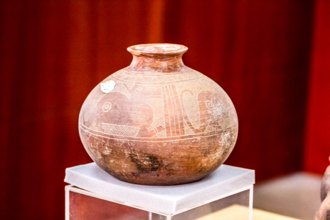
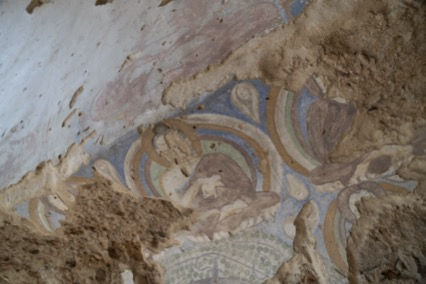
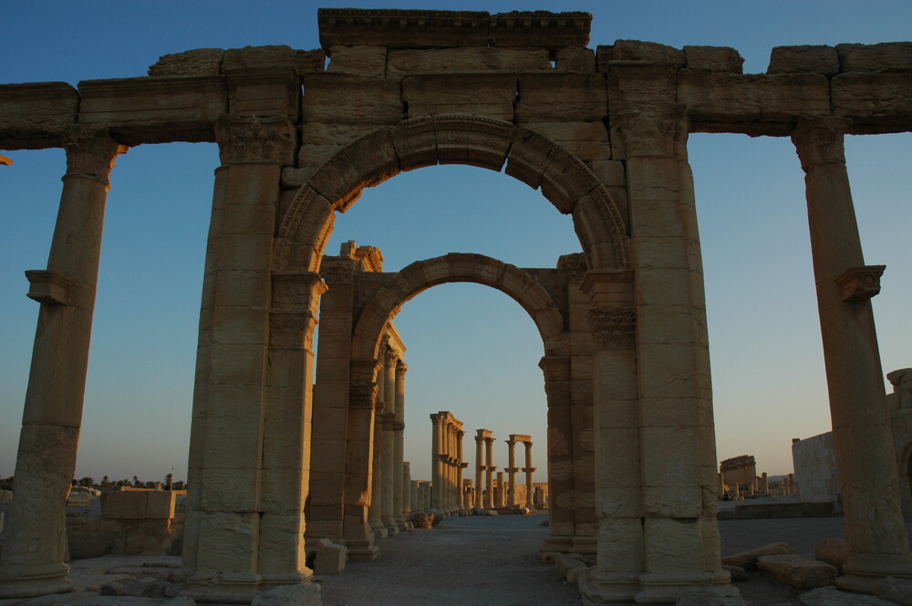

Objects on plinths and partitions
Statues and masks float atop cylindrical plinths, while other pieces hang on rectangular partitions, as visitors ascend a gently sloped helical walkway inspired by the Guggenheim Museum in New York.
Six hundred stolen and missing objects from over 50 countries, selected by Member States among those listed in the INTERPOL Stolen Works of Art Database — presented on a timeline, from a Syrian gold pendant of 120 AD taken from the Palmyra Museum to works still missing today.
In this room

Statues and masks float atop cylindrical plinths, while other pieces hang on rectangular partitions, as visitors ascend a gently sloped helical walkway inspired by the Guggenheim Museum in New York.

Through AI and 3D reconstruction, objects were digitally re-created, returning what theft and time had taken away. Each object page pairs the reconstruction with the original INTERPOL photograph — an ethical choice that reinforces transparency.

The Stolen Objects Gallery is designed to shrink as items are recovered — whilst the Return and Restitution Room grows with every story of a successful return.